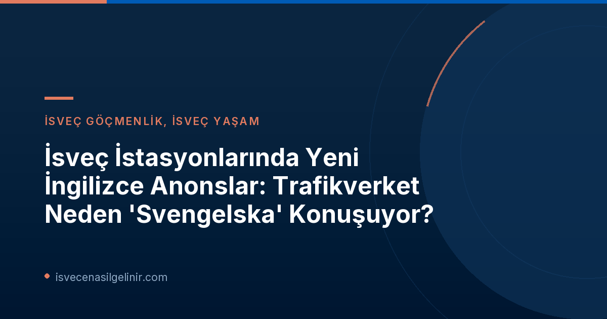

Trafikverket'ten Tarihi Adım: 500'den Fazla İstasyonda Çift Dilli Anons
İsveç Ulaştırma İdaresi Trafikverket, 1 Eylül 2026 tarihinden itibaren ülke çapında bir devrim niteliğinde adım attı. Bu tarihten itibaren İsveç genelindeki 500'den fazla tren istasyonunda yapılan anonslar, artık sadece İsveççe değil, aynı zamanda İngilizce olarak da yayınlanıyor. Bu karar, İsveç'in uluslararasılaşan yapısına ve artan turist ile göçmen popülasyonuna yönelik önemli bir hizmet yeniliği olarak öne çıkıyor.
'Svengelska' Nedir ve Neden Kullanılıyor?
Yeni anons sisteminin en çok dikkat çeken özelliği, İsveççe yer adlarının İngilizce telaffuzla anons edilmesi. Bu duruma halk arasında "Svengelska" (İsveççe ve İngilizce kelimelerinin birleşimiyle türetilmiş bir neologizm) deniliyor. Örneğin, "Bollstabruk", "Västerås" ve "Alingsås" gibi şehir isimleri, İngilizce aksanıyla "Bollstah", "Westerås" ve "Älingsauce" şeklinde duyuruluyor. Trafikverket'e göre bu durum bir hata değil, bilinçli bir tercih.
Peki, Trafikverket neden böyle bir telaffuz kullanıyor? Temel amaç, İsveççe bilmeyen yolcuların duydukları anonsları, biletlerindeki veya istasyon tabelalarındaki yazılı yer adlarıyla daha kolay eşleştirebilmelerini sağlamak. Trafikverket yetkilisi Torbjörn Molander, Göteborgs-Posten gazetesine yaptığı açıklamada, "Bu, İsveççe'den çok İngilizce bilen kişiler için" diyerek uygulamanın gerekçesini net bir şekilde ortaya koyuyor. Molander, İsveççe bilenler için bu telaffuzun komik ya da garip gelebileceğini kabul etmekle birlikte, bunun "bilinçli" bir karar olduğunu ve "yabancılar için ülkeye uyumu kolaylaştırmayı" hedeflediğini belirtiyor.
Yapay Zeka Değil, İnsan Emeği: Anonsların Arka Planı
Bazı kişiler, alışılmadık telaffuzlar nedeniyle anonsların bir yapay zeka (AI) tarafından yapıldığını ve AI'ın İsveççe isimleri doğru telaffuz edemediğini düşünebilir. Ancak Trafikverket, bu konuda bir açıklama yaparak, hem İsveççe hem de İngilizce versiyonlardaki yer adlarının insan seslendirmenler tarafından kaydedildiğini belirtti. Bu, uygulamanın teknik bir aksaklık değil, stratejik bir karar olduğunu doğruluyor.
Yeni Anonslar Kimler İçin Büyük Bir Kolaylık Sağlayacak?
Bu yeni anons sistemi, başta İsveç'e yeni göç etmiş uluslararası öğrenciler, işçiler ve aile birleşimiyle gelenler olmak üzere, birçok farklı kesimden insana önemli kolaylıklar sağlayacak. İsveç kültürüne ve diline yabancı olan yolcular, bu sayede tren seyahatlerinde daha az stres yaşayacak ve yanlış durakta inme riskini minimize edecekler. Ayrıca, uluslararası turistler için de İsveç'te ulaşım deneyimi çok daha anlaşılır ve keyifli bir hale gelecek. İsveç'e göç eden veya burada uzun süreli ikamet eden kişiler için, günlük yaşamda karşılaşılan dil zorluklarını aşmak adaptasyon sürecinin önemli bir parçasıdır. Trafikverket'in bu yeni anons sistemi, dil engeli yaşayan yolcuların seyahatlerini daha güvenli ve stressiz hale getirmeyi amaçlıyor. Tıpkı İsveç'te başarılı bir yaşam kurmak için dilin kilit rol oynaması gibi, sverigemedborgarskapsprov.com adresi de İsveç vatandaşlık sınavına hazırlık sürecinde dil bilgisi ve kültürel entegrasyonun önemini vurgulayan değerli kaynaklar sunmaktadır.
Türkiye'den ve Diğer Ülkelerden Gelenler İçin İsveç'te Ulaşım Artık Daha Anlaşılır
Türkiye'den veya diğer ülkelerden İsveç'e gelenler için dil bariyeri, özellikle ilk zamanlarda günlük hayatın birçok alanında zorluk yaratabilir. Ulaşım, bu zorlukların başında gelmektedir. Trafikverket'in bu yeniliği sayesinde, İsveç'in karmaşık yer adlarını telaffuz etmekte zorlanan veya tam olarak anlayamayan uluslararası yolcular, gidecekleri yerleri çok daha net bir şekilde takip edebilecekler. Bu uygulama sadece bir kolaylık değil, aynı zamanda İsveç'in farklı kültürlerden gelen insanlara karşı gösterdiği misafirperverlik ve kapsayıcılığın da bir göstergesidir.
Trafikverket Yeni Çift Dilli Anonslar: Önemli Bilgiler
| Özellik | Detay |
|---|---|
| Başlangıç Tarihi | 1 Eylül 2026 |
| Kapsam | 500'den fazla tren istasyonu |
| Ana Amaç | İsveççe bilmeyen yolcuların yer adlarını tanımasını kolaylaştırmak |
| Kullanılan Diller | İsveççe ve İngilizce |
| Telaffuz Özelliği | İsveççe yer adlarının İngilizce aksanıyla (Svengelska) anons edilmesi |
| Seslendiren | İnsan seslendirmenler (Yapay zeka değil) |
Referanslar:
- SVT Nyheter Inrikes - Nya utrop på 500 stationer – därför pratar Trafikverket svengelska
- sverigemedborgarskapsprov.com
İsveç'e Mi Uyum Sağlıyorsunuz?
İsveç'teki yaşamınıza adaptasyon sürecinde, ülkenin kültürel ve günlük pratiklerine dair bilgi edinmek çok önemlidir. Trafikverket'in bu yeni adımı gibi, dil ve adaptasyon konularında size yol gösterecek kaynaklara ulaşmak için tıklayın.